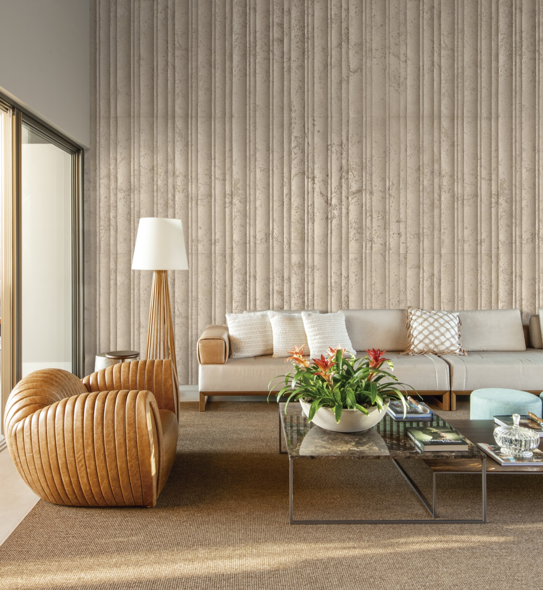

Referência residencial
Sala com revestimento canelado
Aplicação do revestimento cimentício canelado Dorica Etrusco em parede de sala de estar, compondo com mobiliário neutro e iluminação direcionada.
Foto: Favaro Jr.
Especificar materiais semelhantes